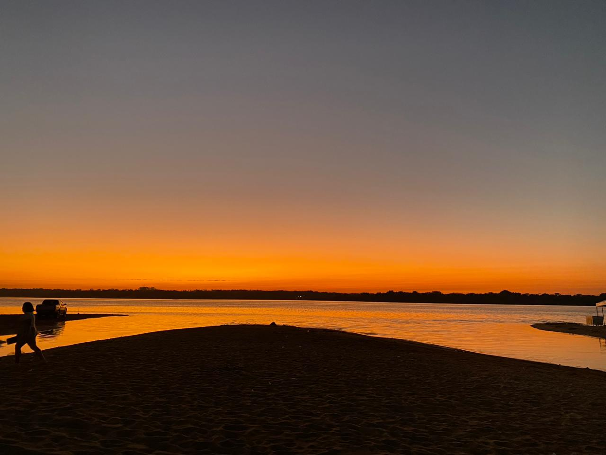

Conheça lugares bonitos e aconchegantes em Conceição do Araguaia
Know beautiful and cozy places in Conceição do Araguaia
Esse site, é produto de uma atividade pedagógica desenvolvida no Curso Técnico em Informática Integrado ao Ensino Médio - Turma F229XB - IFPA campus Conceição do Araguaia. A referida atividade interdisciplinar envolveu as discplinas: Programação Web, Inglês Técnico II e Design Gráfico e Multimídia.
This website is the product of a pedagogical activity developed in the Technical Course in Computer Science Integrated with High School - Class F229XB - IFPA campus Conceição do Araguaia. The interdisciplinary activity involved the following subjects: Web Programming, Technical English II and Graphic and Multimedia Design.
Cada página foi criada com formatos e cores definidos pelas equipes, portanto, não seguem um padrão uniforme.
Each page was created with formats and colors defined by the teams, therefore, they don’t follow a uniform pattern.
